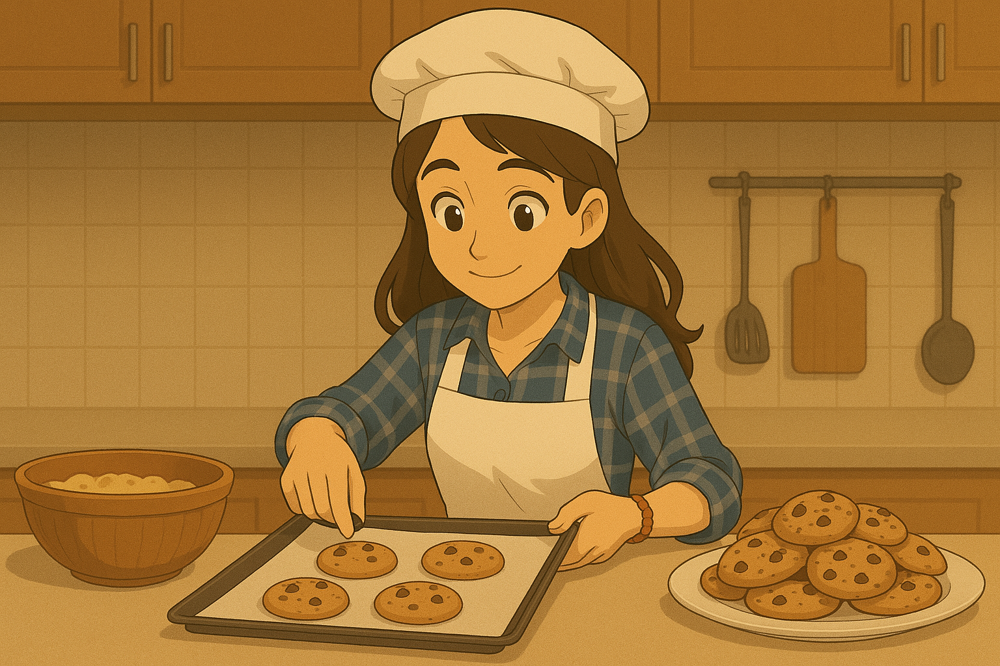

Chueligalletas
Descripción:
"Chueli galletas" son las galletas clasicas que hace cada tarde la Chuela, consta de una masa tierna y de un rico sabor a vainilla, con el plus de las chips de chocolate. Una receta simple que quedara lista en menos de 40 minutos.
Ingredientes:
- Harina (1 taza y media)
- Polvo para hornear (1 cucharadita)
- Azucar (1 taza)
- Chips de chocolate (a eleccion)
- Leche (1 taza)
- Aceite (1/2 taza)
- Vainilla (1 cucharada)
Procemiento:
- Pre calentar el horno a 180 grados aproximadamente.
- Agregar a un recipiente todos los ingredientes secos (harina, polvo para hornear, azucar y las chipas de chocolate).
- Incorporar a la mezcla los ingredientes liquidos (leche, aceite y vainilla).
- Una vez lista la masa, estirarla hasta que quede de 2 a 3cm de alto y cortar con la forma que se quiera obtener.
- Engrasar y enharinar el molde para poner las galletitas.
- Poner la bandeja en el horno a fuego medio durante 15 minutos, luego verificar que se esten cocinando bien y si pasado el tiempo no estan cocinadas dejarlas de 5 a 10 minutos mas.